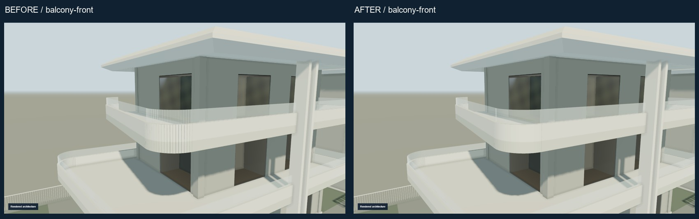
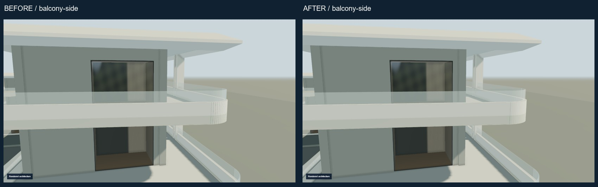
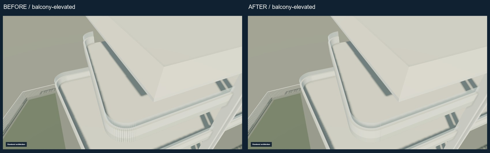
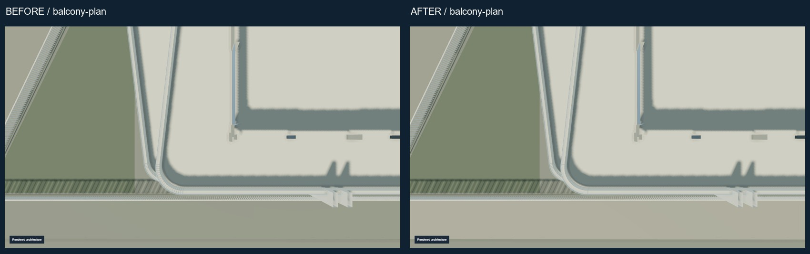
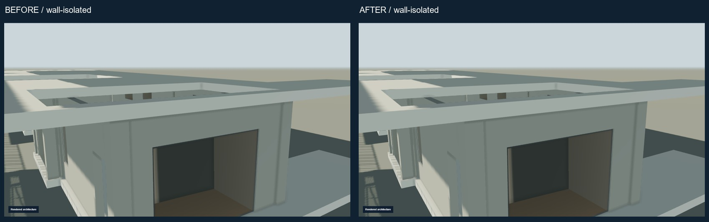
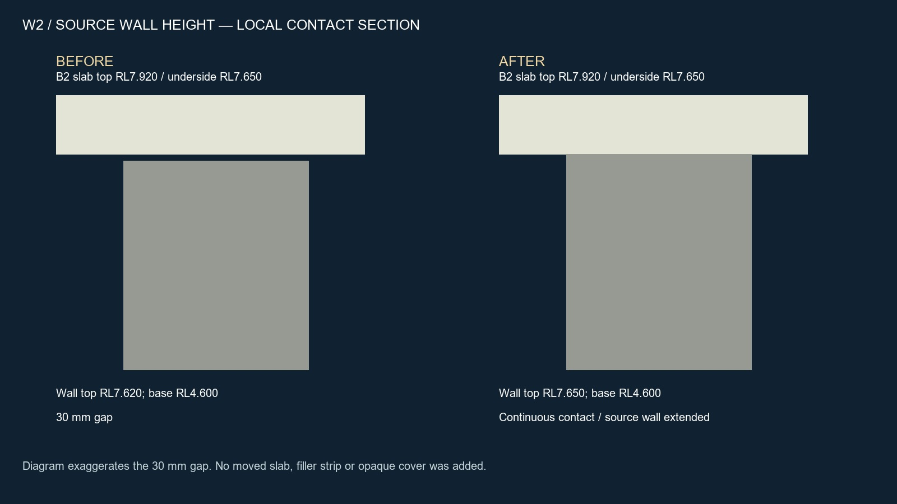
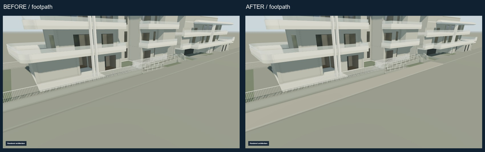
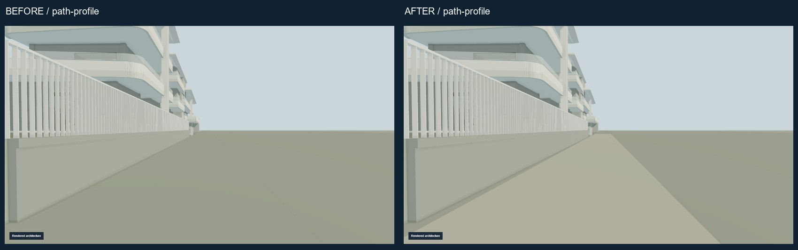
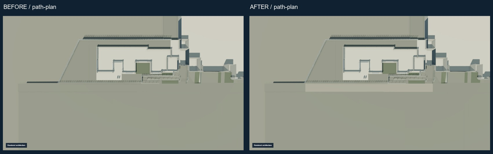
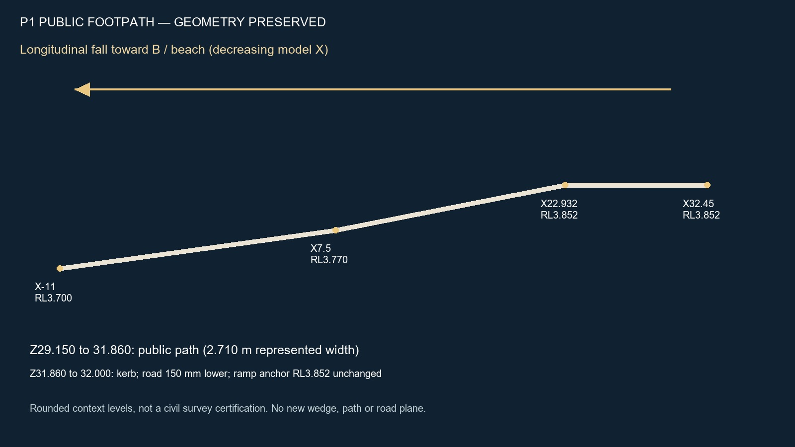

ANNA ATHINA · B-LOCAL-CONTACT-SUCCESSOR · 2026-09-27
Latest architectural review.
B2 outer-front solid/glass curve joined; W2 enclosure meets slab; P1 public path distinguished from road. Four nook ends and corrected site grade preserved. The approved ramp, construction journey and cinematic handover are preserved.
Temporary public human-review copy. Not the production Raysons website. Source drawings and original site photographs are deliberately excluded.









